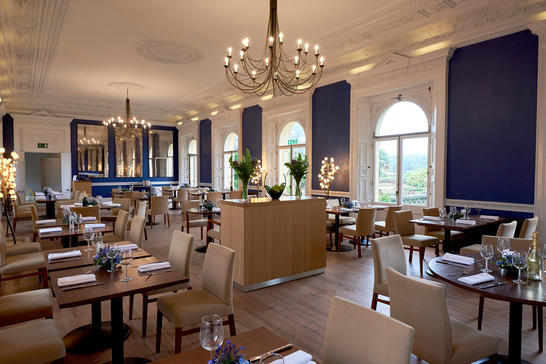

JMP-Studio
http://www.jmp-studio.com/single-post/2017/05/08/Osborne-House---Refurbished-Restaurant
The Vander Lust
Blu Kouzina. Thevanderlust.com, thevanderlust.com/en/city/singapore/food/3661.html.
How Stuff Works
Sennebogen, Emilie. What Makes Certain Foods so Expensive? HowStuffWorks, HowStuffWorks, 7 July 2009, recipes.howstuffworks.com/menus/certain-foods-so-expensive.htm.
The Wall Street Journal
A Pint-Size Problem.Https://Www.wsj.com/Articles/SB121279252381153273, si.wsj.net/public/resources/images/PT-AI715_BEER_20080605145222.jpg.